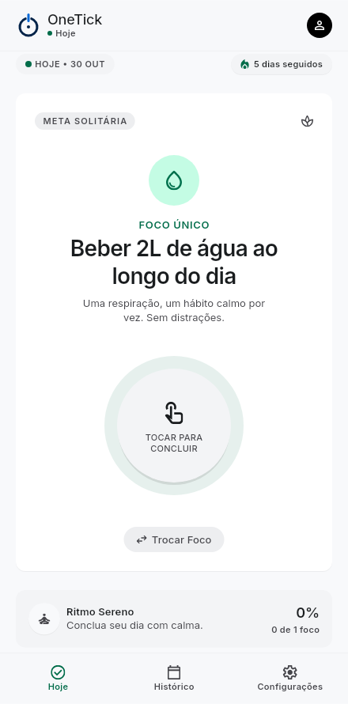
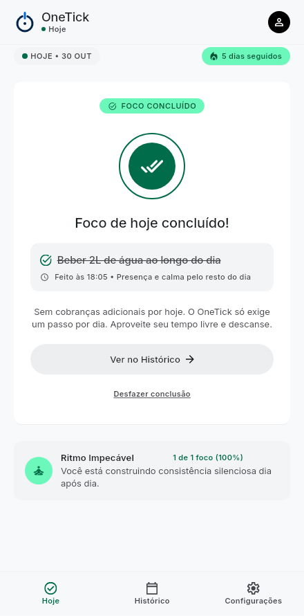
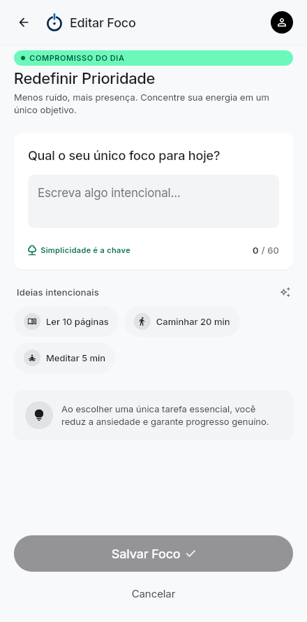
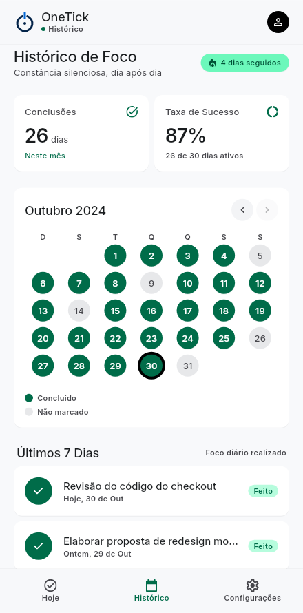
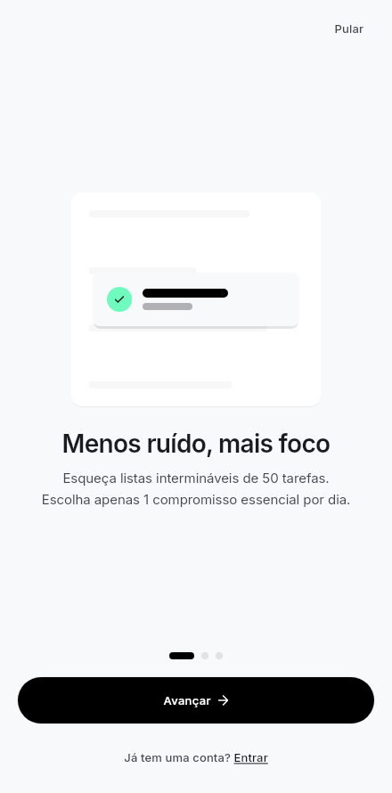

Um foco essencial por dia.


Apps de tarefas incentivam dezenas de itens e quase nada é concluído. O OneTick pede só uma prioridade por dia.


Escolha o que é essencial hoje.
Um toque no círculo e o dia está ganho.
Veja os dias concluídos e a sequência.
